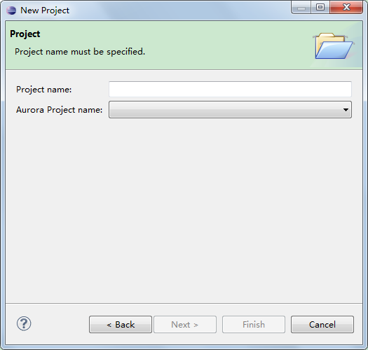
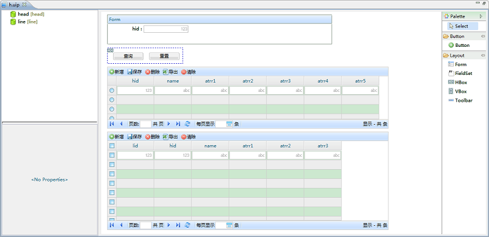
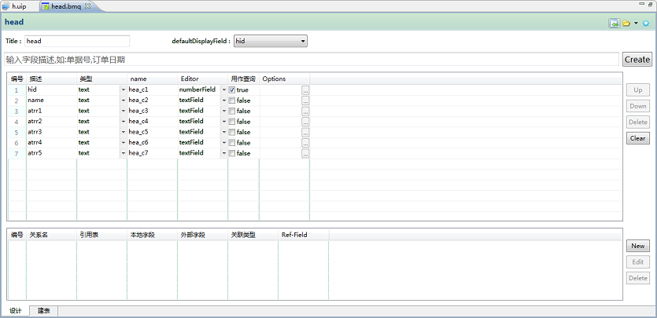

Aurora 原型工具
Aurora 原型工程是一个以可视化界面快速创建数据库表、BM和Sceen文件的工具。
新建原型工程
新建一个原型工程很简单，选择，
输入项目名即可创建。
原型工程需要依赖于一个现有的Aurora 工程。

UI Prototype文件
UI Prototype文件（以下简称uip文件）是一个可视化编辑的文件，
可以根据uip文件生成内容一样的Screen文件，
生成的Screen文件在原型工程所关联的Aurora 工程设置的WEB主目录下。
uip文件文件内容如下图：

Model Prototype文件
Model Prototype文件（以下简称bmq文件）是一个快速构建Model的文件，bmp文件会自动在数据库建表和生成BM文件。
bmq文件内容如下图：
